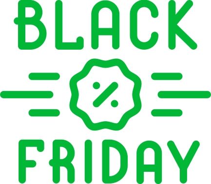
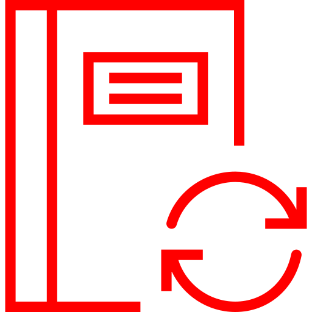
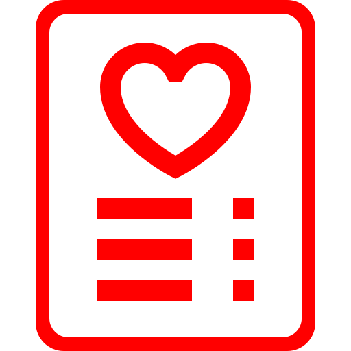
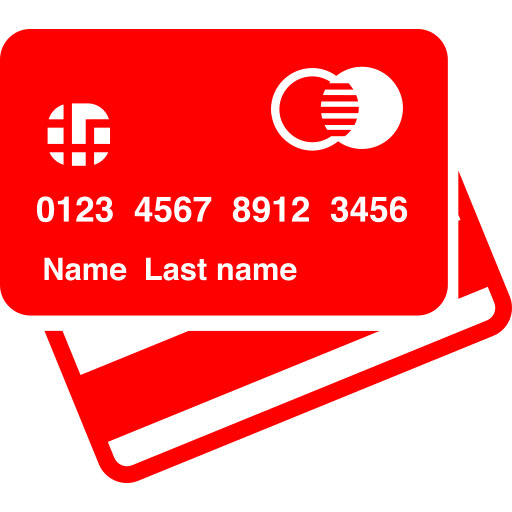
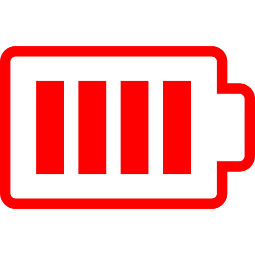
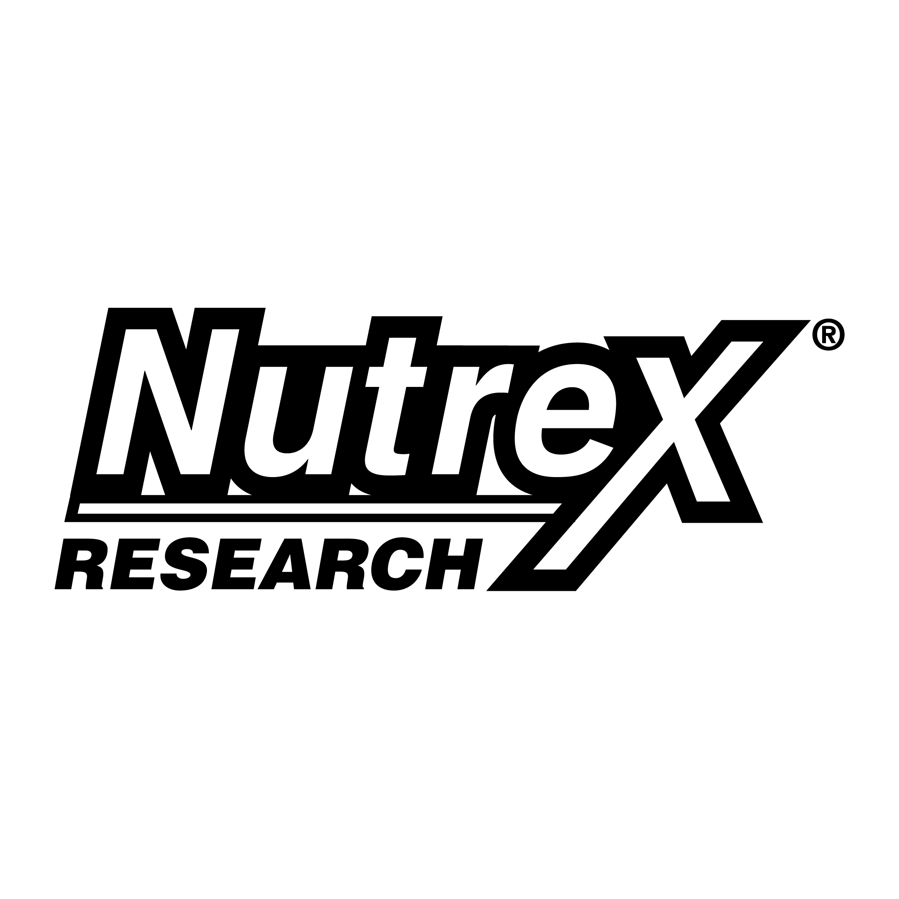
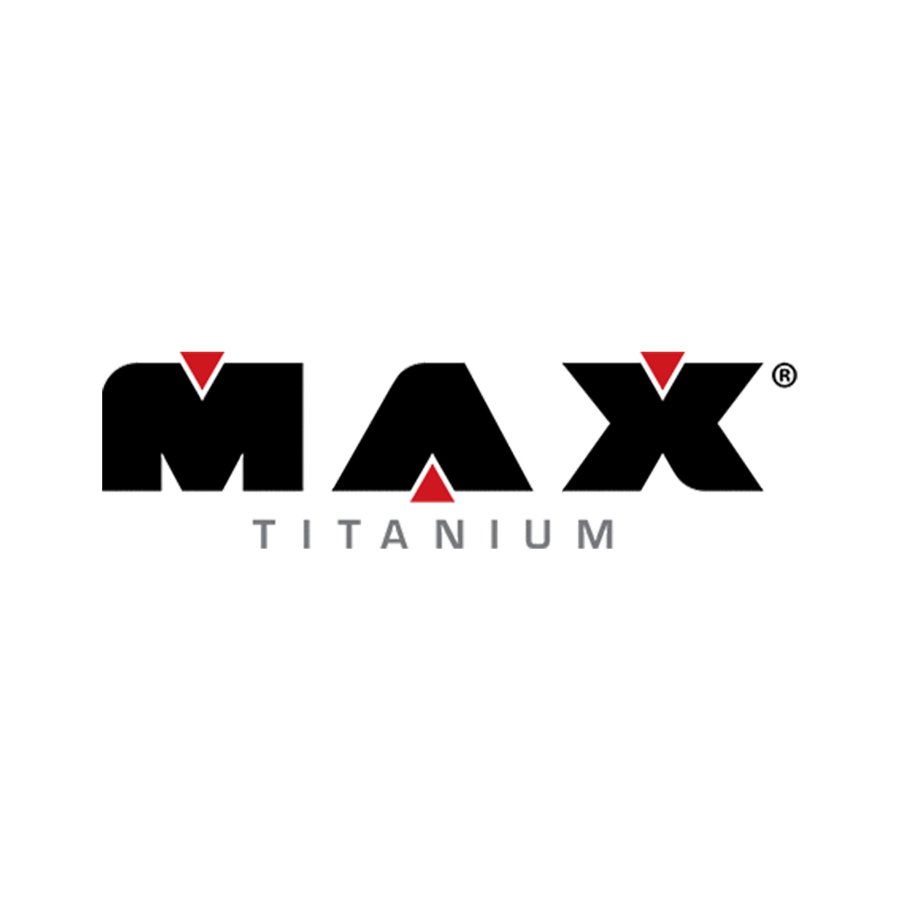

OS MELHORES SUPLEMENTOS NACIONAIS E IMPORTADOS COM DESCONTOS SURPREENDENTES
Faltam Apenas
Aproveite Agora!
Aqui na Corpo Perfeito a
Black Friday Corpo Perfeito
Todo ano a gente aguarda essa data tão especial e ela está finalmente chegando. Sim, a Black Friday Corpo Perfeito está aí e essa é sua oportunidade de fazer dela a melhor da sua vida. A Corpo Perfeito está preparando ofertas e descontos em suplementos como nunca antes! Aqui você vai poder aproveitar a Black Friday antes mesmo de o dia chegar.
Quer saber como? Dá uma olhada nesse super cupom de desconto!
Aqui na Corpo Perfeito a
Black Friday chega ANTES!
Use o Cupom abaixo
JI09435843U8
Copie e Cole este código no Fechamento do Pedido

Como é a Black Friday na Corpo Perfeito
A Corpo Perfeito entende a ansiedade por comprar os melhores suplementos com os melhores preços e, por essa razão, visamos sempre transformar a Black Friday em um grande evento, garantindo a qualidade dos nossos produtos incríveis, junto a variedade e rápida entrega para que você não tenha que esperar muito por aquele suplemento que você aguardou tanto para comprar.
A Corpo Perfeito se compromete com seus clientes e quer que você tenha a melhor Black Friday da sua vida, organizando o sistema perfeito de entrega e agilidade, para que você saia ganhando de verdade.
Além disso, selecionamos com muito carinho produtos para todas as finalidades. Quer suplemento para te ajudar a reduzir gordura? A gente traz. Aumentar a massa muscular? A gente tem. Obter mais energia? Também! A Black Friday Corpo Perfeito está aí para você sair com tudo o que precisa para ficar com um corpão.
Suplementos importados e nacionais e uma variedade incrível para que você encontre o que está procurando com preços realmente impressionantes. Quer coisa melhor?
Dicas para Black Friday 2017.

Atualize todos os seus dados de cadastro – com a grande demanda e a quantidade de pessoas acessando o site na Black Friday, aconselhamos que você já deixe seus dados atualizados com endereço para entrega. Dessa maneira, você garante que não vai perder a chance de levar seu suplemento para casa rapidinho.

Faça uma lista de desejos – aposto que você já tem uma ideia dos suplementos que você quer abraçar. Ter uma lista das suas possibilidades pode te ajudar a encontrar seus suplementos com mais rapidez e garantir que outras pessoas não chegarão à sua frente. Lembre-se que os preços da Black Friday vão deixar todo mundo doido.

Já separe seus meios de pagamento – para garantir que não vai se estressar procurando o cartão correto ou acessando seu banco, já deixe tudo engajado e as informações necessárias perto de você, assim você garante uma Black Friday tranquila e uma compra rápida e segura.

Esteja com a bateria do notebook ou do celular por perto – quer pesadelo maior do que bateria acabar bem no meio da sua compra no Black Friday? Para evitar que isso aconteça, já deixe tudo ao alcance.
As marcas preferidas da Black Friday


Conheça a história da Black Friday
A Black Friday é conhecida por muitos dos americanos como aquele período para fazer todas as compras de natal. Pois é, a Black Friday, também conhecida no Brasil como sexta feira negra, acontece na sexta feira após o feriado de ação de graças nos Estados Unidos e, apesar de não ser reconhecida como um feriado nacional, muitas vezes acaba virando um dia de folga – para quem não trabalha no varejo, claro – para que a mágica das compras com super desconto aconteça.
O termo Black Friday surgiu mais ou menos na década de 60, para marcar o início da febre de compras que acontecem logo antes do natal. O “Black” ou “Negro” se refere as lojas finalmente saindo do “vermelho”, termo usado para indicar o prejuízo que muitas sofriam durante todo o ano.
Os varejistas e a Black Friday
Com varejistas percebendo a importância da Black Friday e a quantidade de pessoas que grandes ofertas poderiam atrair, estes começaram a aderir diferentes práticas para lidar com esse grande dia. Muitos deles anunciavam suas ofertas online antes da Black Friday, garantindo que as pessoas conseguissem se planejar para comprar algum produto, enquanto outros preferiam apresentar suas ofertas de última hora, na intenção de provocar a ansiedade do consumidor e fazê-lo checar continuamente seus anúncios.
Isso chegou a um extremo em 2011, quando muitos dos grandes varejistas dos Estados Unidos começaram a abrir suas portas à meia noite. Para garantir que fossem ter acesso as ofertas que queriam, muitas pessoas chegavam a acampar do lado de fora das lojas esperando o momento certo para entrar e fazer sua Black Friday valer.
No Brasil a primeira Black Friday no Brasil aconteceu em 2010, somente online, reunindo mais de 50 lojas que se disponibilizaram a abaixar seus preços e competir entre si.
O recorde aconteceu em 2013, quando comércios online chegaram a faturar R$770 milhões.
BOA SAÚDE SUPLEMENTOS
O Boa Saúde Suplementos visa fornecer produtos de alta qualidade com o intuito de promover o bem-estar para o seu corpo e mente. Suplementos alimentares ajudam o corpo a repor qualquer necessidade de nutrientes que seu corpo possa ter, te auxiliando a ter mais saúde, melhorar performance e desempenho ou suprir qualquer deficiência de nutrientes que podem estar te impedindo de atingir seus objetivos de forma eficaz.
[ ver mais ]
© Todos os Direitos Reservados - Loja Corpo Perfeito